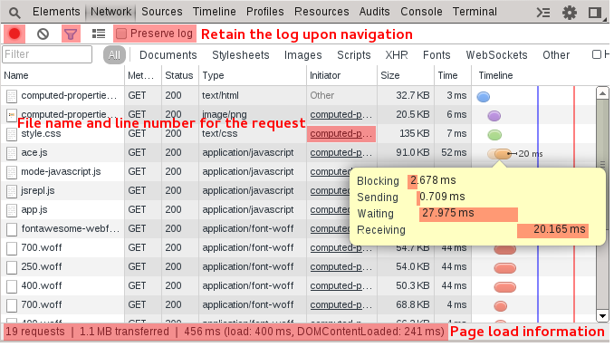

Network
The network tab is very useful for inspecting network requests. Note: the developer tools need to be open for requests to be logged.
- The red button at the top left enables and disables the logging of requests (defaults on).
- The filter icon allows you to filter request by type and by key words.
- Mouse over individual requests on the timeline column to view timing information.
- The initiator column has a link to the file and line number from where the request was initiated.

Exercise
Use the network tab in the developer tools to find in the source where an AJAX request is made to some-response.json